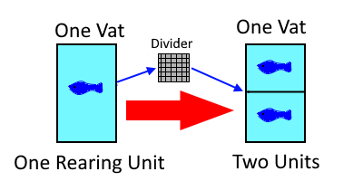
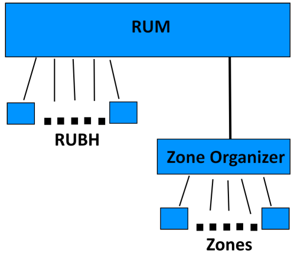
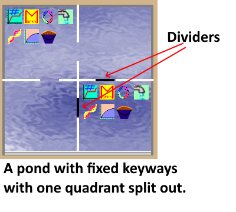
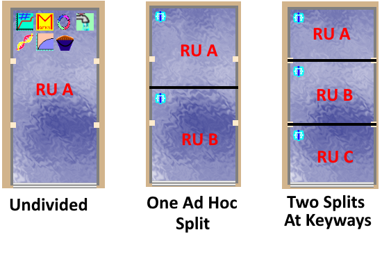
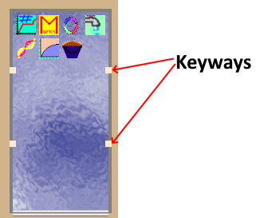

Rearing Unit Business Object
Purpose of the Model
When people look at a fish hatchery they see raceways, vats, ponds, and so on. These are the physical structures that hold fish, but the concept of a rearing units includes more than just the obvious physical structures. For one thing, there are a series of holding tanks, transfer tanks, coolers, fish marking trailers and so forth that might hold fish temporarily. A hatchery may or may not care about tracking those temporary fish containers, but any versatile system that manages the rearing units in a hatchery has to be able to handle all the containers, in case that is desired.
While tracking the physical structures at a hatchery is important, it is not sufficient to understanding the operation of a fish hatchery. Physical structures may be divided into multiple smaller spaces, the number and size of which can change over time. To understand the operations of a fish hatchery over time, it is necessary to track the spaces within the physical structures and how they change over time, in addition to tracking the physical structures themselves. Some of the information such as temperature, flow, and often depth, that a hatchery would want to track, are tied to the physical structure, while other information such as fish density, volume, and turnover, are tied to the spaces within the physical structure.
In the Hatchery Information System, the physical structures are called Rearing Unit Bases, or RUB. The spaces within the physical structures are called Rearing Units or RU. A single Rearing Unit Base will have one or more Rearing Units within it. The number or rearing units may stay fixed, if the base can’t be divided, or it can change over time as dividers are added and removed. While Hatchery Information System makes use of these formal names internally and in documentation, when talking about a hatchery design with a general audience, it is more common to use the term “rearing unit” to refer to either the physical structure or the spaces within the physical structure without making a distinction between the two. The context of the conversation is usually sufficient to tell the two apart.
Rearing Unit Business Object
The Rearing Unit Business Object model is concerned with managing the rearing units in both space and time. The temporal component consists of the number and size of rearing units as they change over time. The spatial component consists of organizing the rearing unit bases into related groups and organizing the relationship of the groups relative to one another. This layout management is of little interest to most hatchery data management designs, but it is vitally important to an interface that displays the structures on the screen as graphical objects that the user can interact with.
All rearing units in the Hatchery Information System are plugins. This allows the program to have a wide and flexible variety of different shapes, sizes, and behaviors of rearing units. Many other plugins that are part of the Hatchery Information System need to get information about volume, turnover, and other aspects of the rearing units that are inextricably dependent on the shape of the structure. Only by having rearing units be plugins is it possible to accommodate the wide variety of possible structures. Rearing unit plugins in the Hatchery Information System are different from other plugins in the project, as they implement interfaces specific to rearing units, and are loaded by the Rearing Unit Business Object rather than the main Hatchery Information System program.
The primary interaction that non-rearing unit plugins will have with the Rearing Unit Business Object model is to get information about the current states, locations, sizes, and names of rearing units, as well as getting information on water depth and flow. The location of water depth and flow in Rearing Unit Business Object may seem a bit out of place, as these are both parameters that seem suitable to be plugins, but depth and flow are parameters that interact closely with the geometry of the physical rearing units to allow calculations of volume and turnover. These were considered sufficiently fundamental to the rearing of fish that they made more sense as parts of Rearing Unit Business Object than anywhere else.
The History Problem
If all that was necessary for a hatchery data management system was keeping track of the current set of rearing units, there would be several suitable ways to do that. Once historic data begins to enter the picture, the situation becomes much more complicated. A big part of the design of the Rearing Unit Business Object model is devoted to managing this complication.
Consider the case where a person wants to enter the activity of some previous year. The person might want to put fish in a raceway as part of that process. If the person adding the fish neglects to also indicate where and when the fish were removed from the raceway, the fish will still be in the raceway up to the current day. That would certainly be a problem if there are currently fish in the raceway, as the program will only know what the user tells it, so it will think the current fish were mixed in with those previously entered fish. In fact, since adding the fish and removing the fish are separate, discrete, operations, there will necessarily be a window of time between when the fish were added and when the fish were removed. If one considers how traits flow in the Fish Business Object, it should be obvious that this could cause serious complications, even if the user does not neglect to remove the fish.
A further issue involves splitting rearing units. If a person were to enter the data for the previous year, perhaps a raceway was divided. That would be easy enough to do, they could just go in and divide the raceway and all is well...or is it? What happens if the person forgets to also indicate when the divider was removed? Perhaps a divider was added at the same place this year. There can’t be two dividers in the same place, and the program lacks sufficient information to resolve this. Even worse would be the case where somebody went in and removed a divider sometime in history, but then neglected to add it back in. If fish were then added to the rearing unit created by the divider, the program would have a problem, as the rearing unit the fish had been added to no longer exists.
The Rearing Unit Business Object model solves these problems by following the narrative of the rearing unit over time and ensuring that it makes sense. The model keeps a narrative of a rearing unit starting with a time when the rearing unit was empty and undivided, each time a divider screen is added prior to the present time, and each time fish are added prior to the present time, the model makes sure that the narrative still makes sense. The model checks that fish added can mingle with any fish currently in the rearing unit, and that divider screens added or removed leave the rearing unit in a plausible configuration. The model also checks to see whether or not fish added to a rearing unit could plausibly be part of a later group of fish added to the same rearing unit. If any of those checks are violated, then the model creates a promise. The user must fulfill the promise by either removing the fish, or adjusting divider screens, as needed to complete the narrative, before they are allowed to complete the action. Promises and the resolution of promises are both handled as simply and transparently as possible, but the model ensures that the resulting narrative is at least possible before anything gets saved. Finally, before any changes are allowed, the model announces to the rest of the program what changes will be made such that other models can check to see whether or not the changes will cause them any problems. Any model or plugin can refuse a change, so long as they give a reason.
Rearing Unit Model Layout
The Rearing Unit Business Model starts with the Rearing Unit Manager (RUM) object. This object loads all rearing unit plugins and organizes the rearing units. From this object, there are two branches, one to all the Rearing Unit Base Holders (RUBH) and the other to the Zone Organizer.
To understand the model, it helps to understand that the RUM object was originally all there was to the model. Back before the history problem was solved by constructing stories, the RUM object was just a shell around a dataset representing the underlying database tables. The functionality found in the RUM object was nearly all of the functionality found in the entire Rearing Unit Business Object model. Solving the history problem made this design so cumbersome that it became unwieldy. The stories that were used to solve the history problem were all tied to individual rearing unit bases, not to the hatchery as a whole. Still, the functionality was already there, so it was largely left alone under the new design.
The history problem made it much more valuable for there to be individual objects holding individual physical rearing unit structure, which is a rearing unit base. Each rearing unit base acted as a unit independent from any other rearing unit base. The objects holding the individual rearing unit base contained the information about the characteristics of the physical rearing unit, the history of changes to the rearing unit layout, and all the functionality for adding to the story of the rearing unit over time. The history of changes to the rearing unit layout comprises the story of the rearing unit that can be used to solve the history problem.
The object that holds the physical rearing unit is called the RUBH. The RUM object can return a RUBH object for each rearing unit base. The RUBH offers up all of the information that formerly came solely from RUM. In fact, the RUM methods now just look up a RUBH from a dictionary and return the value from the appropriate RUBH. For many actions, a plugin can either interact with RUM directly, or get the RUBH object for a rearing unit and interact with that.
Zone Organizer
The second piece of functionality in the Rearing Unit Business Object is the Zone Organizer, which is responsible for organizing the visual layout of the rearing units for display on the screen. There is little to the Zone Organizer that is of interest to plugins, aside from possibly the zones themselves.
Zones are logical groups of physical rearing structures. Sometimes, the groups of rearing units that make up a hatchery are obvious, such as a bank of raceways. Other times, groups may be at the discretion of the hatchery. It all comes down to how the hatchery organizes their rearing units for management purposes. Three rows of raceways might be one zone or three different zones. Each zone will be displayed on the screen as a distinct unit separate from every other zone, the sole purpose of the Zone Organizer is to organize this display on the screen. Therefore, the organization done by the Zone Organizer should follow how the hatchery wants to logically group sets of rearing units. No other consideration is relevant.

The Zone Organizer is virtually a separate system within the Rearing Unit Business Model. While the Zone Organizer is managed by the RUM object and knows something about the physical rearing units, it has only a superficial understanding of them. Also, since the Zone Organizer is solely involved with layout on the screen, if the rearing units don’t need to be displayed, then the Zone Organizer is not needed.
Keyways
One feature of physical rearing structures that should be noted is the presence of keyways. Keyways are structures built into the walls of the rearing unit which facilitate splitting the structure. Many types of rearing units can also be split in ad hoc fashion wherever the user chooses through the use of temporary screens, but splitting at a keyway is usually more robust, secure, and reliable.
From the perspective of hatchery data management, keyways might be of little interest, except that they end up being powerfully useful in a couple different ways. In the Hatchery Information System, some rearing unit plugins will have rearing units that have keyways in fixed locations. An example of this would be a pond that can be divided in half, or into quarters.
 Other types of rearing units will allow the user to indicate where keyways are located in the physical structure. The most common example of such a rearing unit is the rectangular rearing unit that is suitable for most vats and raceways.
The first advantage of keyways is that it allows rearing units to be divided into spaces with precisely known sizes. An ad hoc divider screen added to a raceway will divide the raceway, but the exact dimensions of the resulting spaces can only be known by measuring, which is seldom done in practice. A divider screen added to a keyway will result in spaces of precisely known area, since the location of the keyway is always known.
In the Hatchery Information System, a divider screen dropped close to a keyway will snap to the keyway. The exact behavior of this action is up to the rearing unit plugin, which can be adjusted to make splitting rearing units much more intuitive. For example, a plugin for a pond that can only be divided in a certain way, can be designed such that the divider screen snaps to the keyways when the screen is dropped anywhere on the pond. For the rectangular rearing unit, the divider screen has to be dropped quite close to the keyways, or else the divider is added at the point where the screen was dropped.
The second advantage of keyways is that they greatly facilitate the automatic naming of rearing units. The goal of the Hatchery Information System was to make a program that could do what the user expected with minimal effort. Any hatchery that splits raceways will have some convention for how the newly formed rearing units will be named. One option would be to require the person who split the raceways to assign a name to each of the new rearing units, but it would be clearly easier if the rearing units were automatically assigned the correct name. Keyways allow this to be done for over 90% of common scenarios.
When a rearing unit is added to a hatchery design, and that rearing unit allows for the addition of keyways, the user can add in a keyway at whatever location exists in the physical structure. When a keyway is added to a rearing unit in this fashion, the user also includes a name for the rearing unit upstream from the keyway and a second name for the rearing unit downstream of the keyway. These names are added once, when the hatchery is being designed. If this is done with a certain amount of thought when laying out the hatchery in the Hatchery Information System, then a divider screen added at any keyway will usually cause the resulting rearing units acquiring the correct names without the user needing to take any further action.
Therefore, keyways are very useful structures when it comes to managing hatchery information in those facilities that often divide their rearing units. Most of the time, if some thought is put into adding keyways to the rearing units, dividing will correctly assign the right names and result in the correct area and volume calculations for the rearing units. For the rare cases where the names attached to the keyway are not adequate, and in the case of ad hoc divider screens, a plugin can be used to assign the correct name.